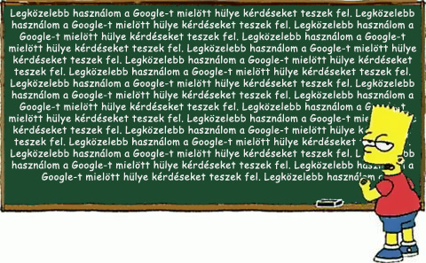

Valaki úgy gondolja túl hülye voltál ahhoz, hogy megnézz valamit a Google-ön mielött kérdeztél volna.
Viccbõl adta neked a linket ehhez az oldalhoz. A lényeg, hogy követted, ami megerõsíti a tényt.
Remélem legközelebb okosabb leszel.
További szép napot.
Az oldal afuckinggoogleit.com alapján készült.